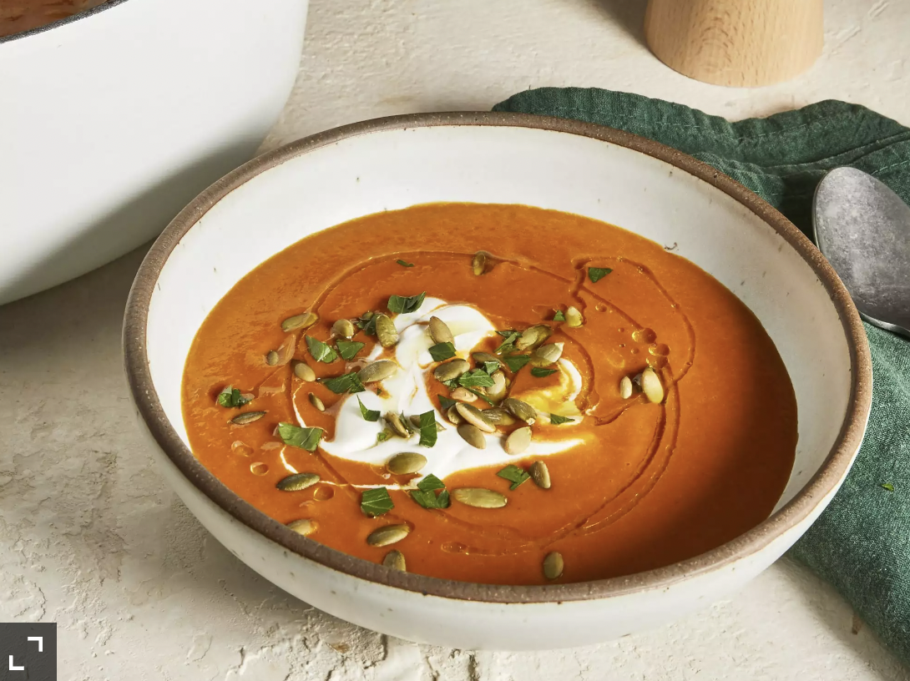

Curried Patty Pan Squash Soup

Curried patty pan squash soup recipe:
This curried patty pan squash soup is very flavorful, but not heavy at all. Most squash soups are on the sweet, rich, and heavy side normally, but this is fresh on your palate, yet boldly flavored from the red curry paste and the smoky paprika.
Nutrition Facts:
Per Serving: 328 calories; fat 28.9g; cholesterol 40.8mg; sodium 1299.8mg; carbohydrates 30g; protein 9.9g. Full Nutrition
Ingredients:
- 1¾ pounds patty pan squash
- 2 tablespoons olive oil
- 1½ cups chopped yellow onion
- 1 cup chopped red bell pepper
- 1 cup chopped carrot
- 3 tablespoons red curry paste
- 2 teaspoons smoked paprika
- 1¾ teaspoons kosher salt, divided
- 4 cups low-sodium vegetable broth
- ½ cup heavy cream
- 1½ tablespoons lemon juice
- ¼ cup roasted and salted pumpkin seeds (pepitas)
- 2 tablespoons chopped fresh parsley
- 1 drizzle olive oil, or to taste (Optional)
Steps:
- Trim stem ends from squash and coarsely chop squash. Heat olive oil in a large Dutch oven over medium-high heat. Add squash, onion, bell pepper, and carrot. Cook, stirring often, until onion is translucent, about 5 minutes. Add curry paste, paprika, and 1 1/2 teaspoons salt; cook, stirring often, until vegetables are beginning to soften, about 5 minutes.
- Add broth, cover, and bring mixture to a boil. Turn heat to medium and allow mixture to simmer, stirring occasionally, until vegetables are very soft, about 15 minutes.
- Remove from heat. Use an immersion blender to blend soup until smooth. If using a blender, pour soup into a blender in batches. Secure lid on blender, and remove center piece to allow steam to escape. Place a clean towel over opening. Process until smooth, about 1 minute. Repeat process with remaining soup.
- Beat cream, lemon juice, and remaining salt with a hand mixer fitted with a whisk attachment in a small bowl on high speed until soft peaks form, 45 seconds to 1 minute.
- Serve soup in wide, shallow bowls with a dollop of lemon cream, a sprinkle of pepitas and parsley, and a drizzle of olive oil.